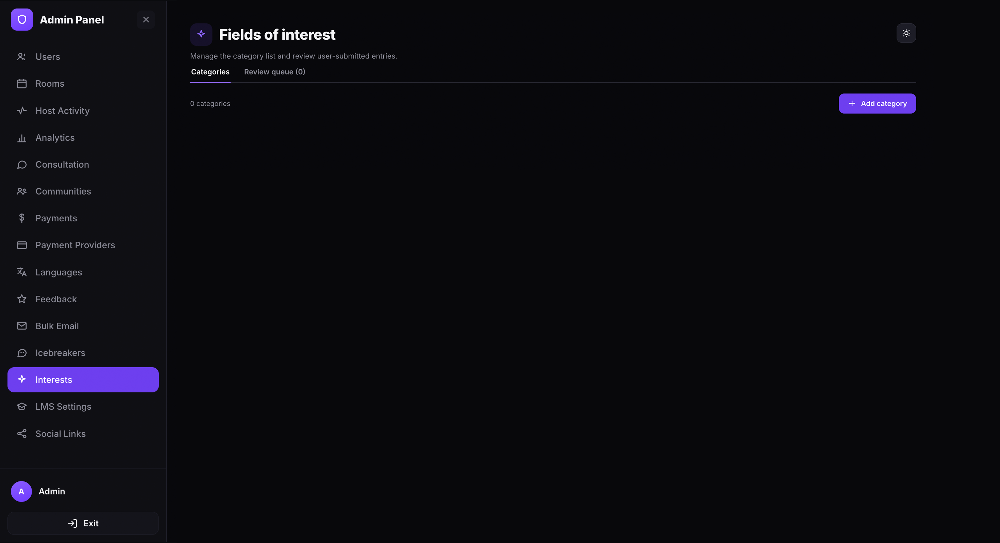
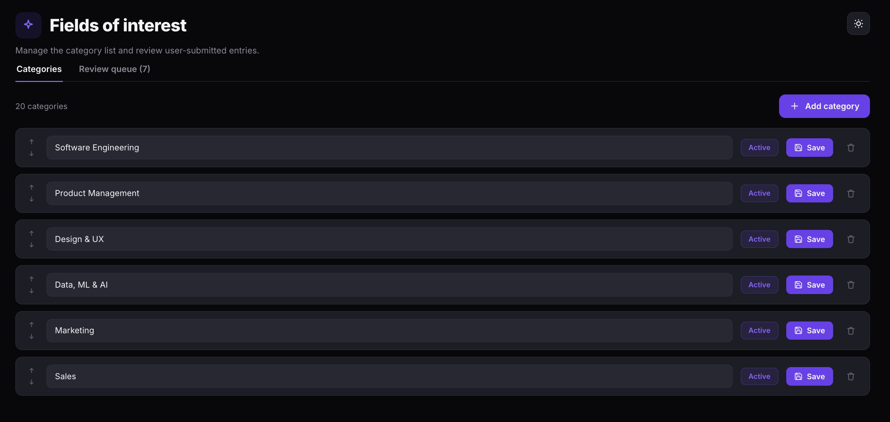
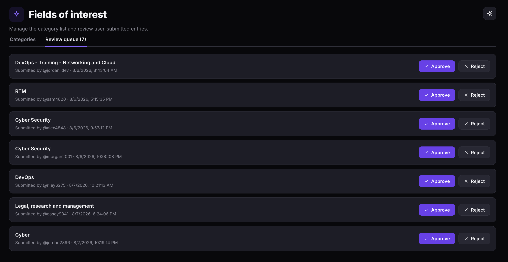

Manage fields of interest
Manage the category list of professional interests and review user-submitted entries. Users select from these categories on their profiles to indicate their areas of expertise or focus.
Open the Fields of interest page
- Open the Admin Panel.
- Click Interests in the left sidebar.
The page has two tabs: Categories and Review queue.

Manage categories
The Categories tab shows all interest categories available on your platform. A counter at the top displays the total number of categories.
Add a category
- Click + Add category in the top-right corner.
- Type the category name in the text field.
- Click Save to confirm.
Rename a category
- Click the category name field to edit it inline.
- Update the name.
- Click Save to apply.
Reorder categories
Use the up and down arrows on the left side of each category row to change its display order.
Delete a category
Click the delete icon on the right side of the category row to remove it.

Review user-submitted entries
When users type a custom interest that does not match an existing category, it is sent to the Review queue for admin approval. The tab badge shows the number of pending entries.
Each entry displays the submitted category name, the username of the submitter, and the submission date and time.
- Click the Review queue tab.
- Review each submitted entry.
- Click Approve to add the entry as a new category, or click Reject to discard it.
